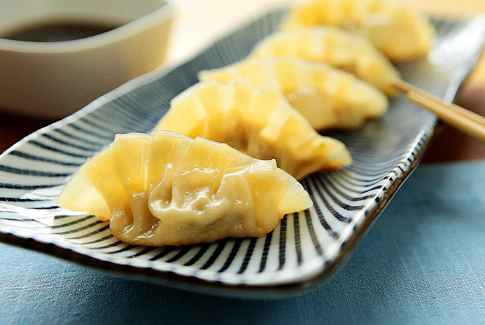

Pork Gyoza

Description
Gyoza are pan-fried Japanese dumplings which make perfect starters or nibbles. Filled with a savory mixture of ground pork and Japanese flavors.
I don't know much regarding Pork Gyoza seeing as I'm a vegetarian and whatnot, but g-dangit they sure as heck are tasty lil buggers!
Prep: 1 hr
Cook: 8 mins
Total: 1 hr 8 mins
Servings: 6
Yield: 40 gyoza
Ingredients
- 12 oz ground pork
- 1/4 head cabbage, shredded
- 1 egg
- 2 spring onions, sliced
- 1 tbsp soy sauce
- 2 tsp sake
- 2 tsp mirin
- 2 tsp minced fresh ginger root
- 40 gyoza wrappers, or as needed
- 2 tbsp vegetable oil
- 1/2 cup water
Sauce:
- 1/4 cup rice wine vinegar
- 1/4 cup soy sauce
Steps
- Combine ground pork, cabbage, egg, spring onions, 1 tablespoon soy sauce, sake, mirin, and ginger in a large bowl; mix well.
- Place approximately 1 to 2 teaspoons of the pork mixture in the center of each gyoza wrapper. Moisten your fingers with water and rub around the edges of each wrapper. Fold wrappers in half over filling, creating a semi circle. Take one side of the wrapper and make crimps along the edges for a decorative pattern (like pleats of a skirt) and press along the edges to seal the two sides together. Ensure there isn't much excess air caught inside the dumpling. Repeat until all the pork mixture is used.
- Heat vegetable oil in a large skillet over medium-high heat. Place as many gyoza in the skillet as fit in a single layer and fry until the bottom is browned, about 3 to 5 minutes. Add water to skillet and reduce heat. Cover and allow gyoza to steam until all the water has evaporated, about 5 minutes. Repeat with the remaining gyoza.
- Mix rice vinegar and soy sauce together for a dipping sauce and serve with the gyoza.